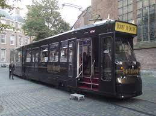
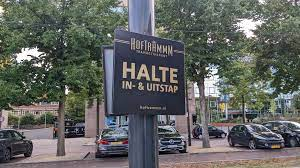
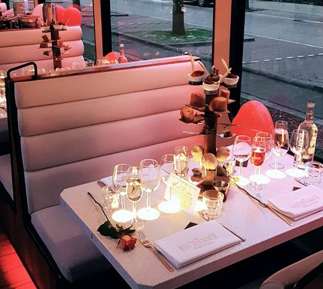
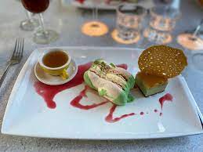
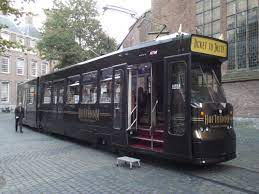
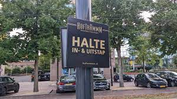
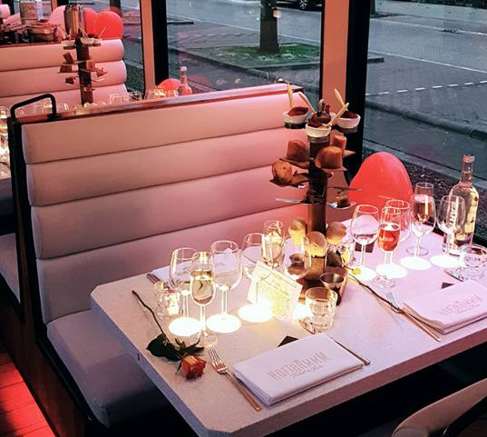
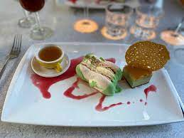

Mooie impressies van de Hoftramm.
Sfeervol dineren in een unieke setting. Kijk hieronder voor wat mooie foto's en laat je inspireren.
   Sfeervol dineren in een unieke setting. Kijk hieronder voor wat mooie foto's en laat je inspireren.
   O o Den Haag is het prachtige volkslied van Den Haag. Klik hieronder op de button om in haagse sferen te komen.